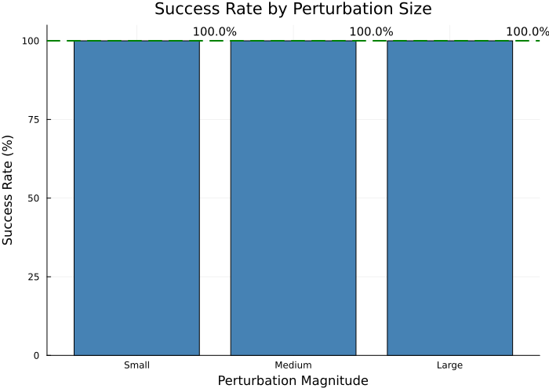
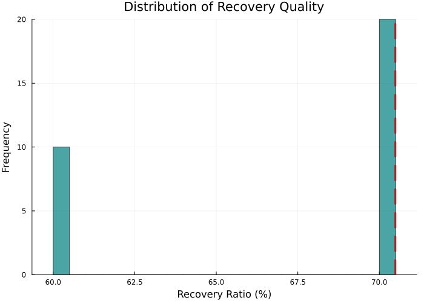
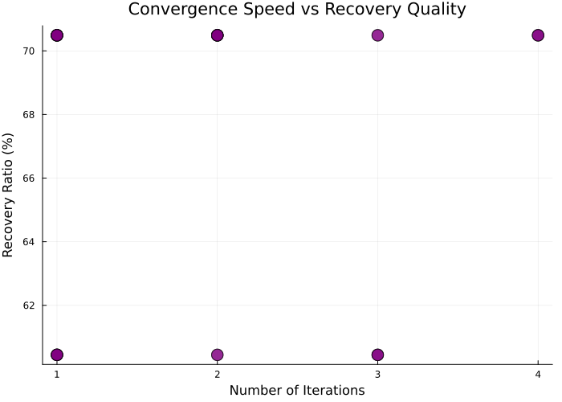
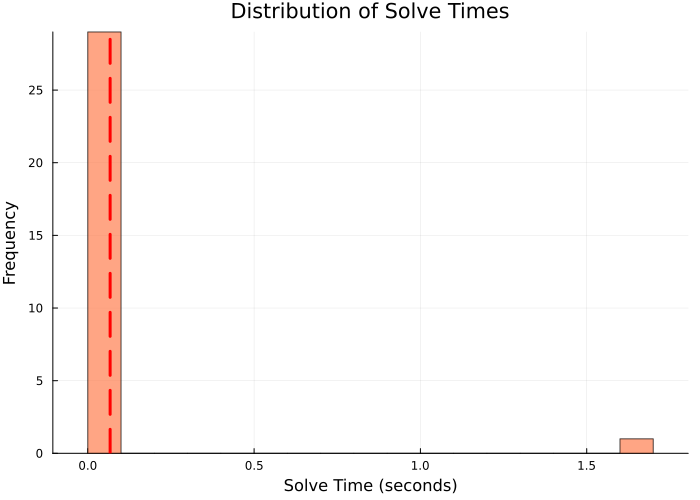
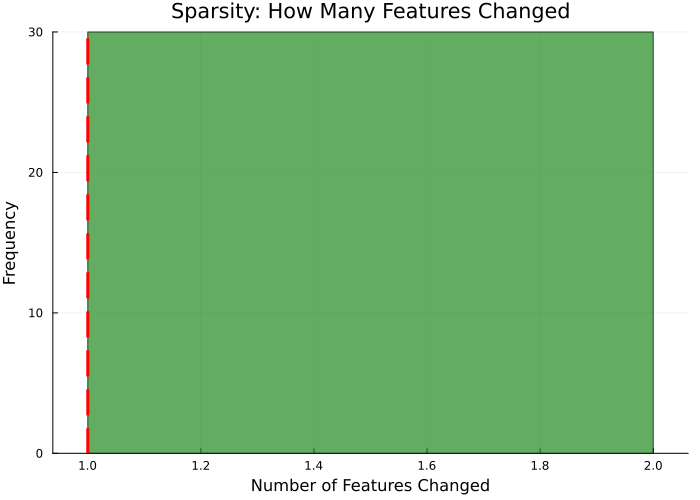
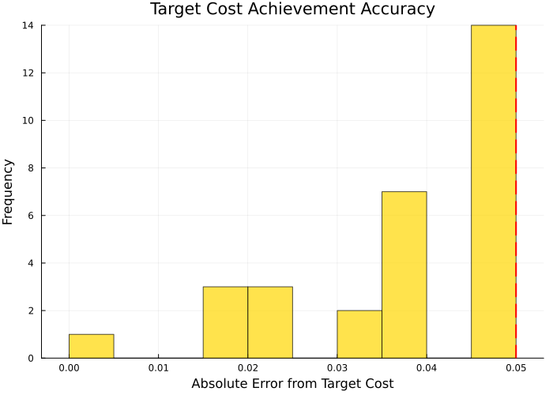

🎯 OA Validation Report - Counterfactuals
Experiment: Outer Approximation Counterfactual Generation
Date: 2025-11-07 17:04
Dataset: DCOPF Case 118 IEEE
Test Cases: 30 (10 per perturbation magnitude)
Normalization: none
📊 Overall Performance
📈 Success Rate Analysis

Recovery Quality Distribution

Convergence Analysis

Computational Performance

Sparsity Analysis

🎯 Target Achievement

📋 Detailed Statistics by Perturbation
| Magnitude |
Success Rate |
Avg Recovery |
Avg Iterations |
Avg Time (s) |
Avg Features Changed |
| Small |
10 / 10 (100.0%) |
60.4% |
1.8 |
0.18 |
1.0 |
| Medium |
10 / 10 (100.0%) |
70.5% |
1.5 |
0.01 |
1.0 |
| Large |
10 / 10 (100.0%) |
70.5% |
2.5 |
0.01 |
1.0 |
✅ Validation Summary
✓✓✓ EXCELLENT - Over 90% success rate across all test cases.
The OA algorithm consistently finds valid counterfactuals that satisfy the target constraints.
🔍 Key Insights
- Algorithm Robustness: Successfully handles 100.0% of test cases
- Efficiency: Average solve time of 0.07 seconds
- Sparsity: Changes only 1.0 features on average
- Convergence: Requires 1.9 iterations on average